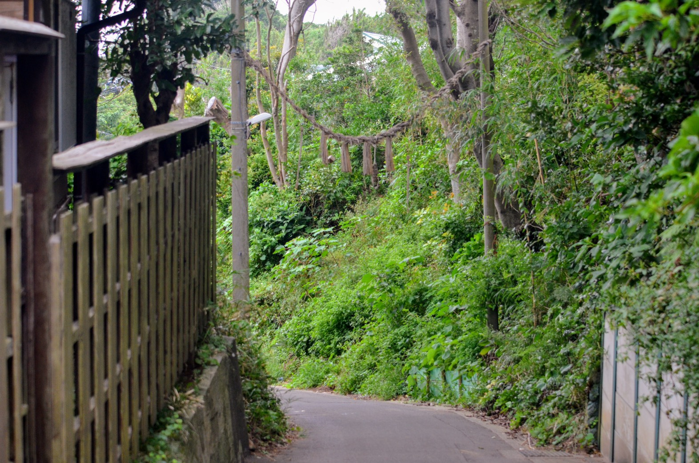
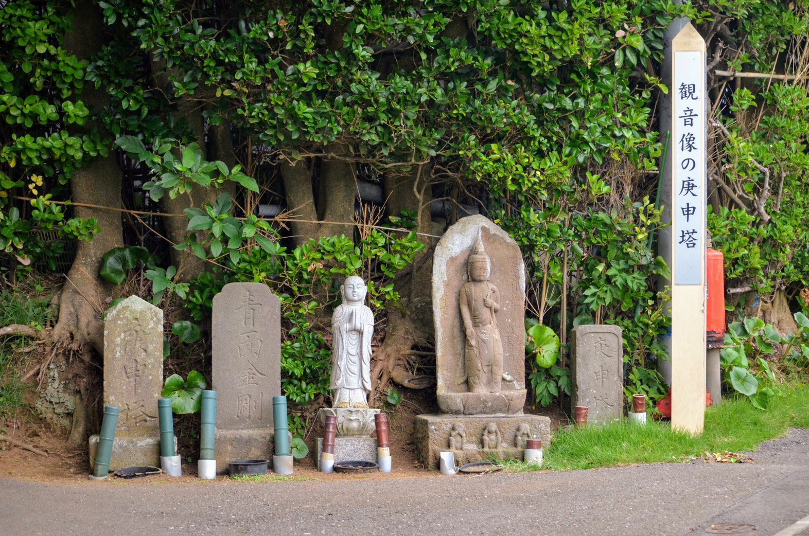

戻る
横須賀紀行
ソレイユの丘
道切り
荒崎公園


写真の道切りは、ソレイユの丘から歩いて10分くらいのところに位置し、電柱にしめ縄にわらで作った刀・わらじ・ヘビや木 のサイコロなどが吊されている。村の入り口から魔物や疫病等が侵入してく ると考えられており、それらを防ぐおまじないのような物である。
地元の方によると、毎年男性が道切りを作って女性が神社の草刈りをする催しがあるそうだ。また、ソレイユの丘ができてから道切りより外に人が住み始めたため、道切りを作るための素材が不足しており道の駅の近くに田んぼを作る計画もあったが結局は頓挫したとのこと。